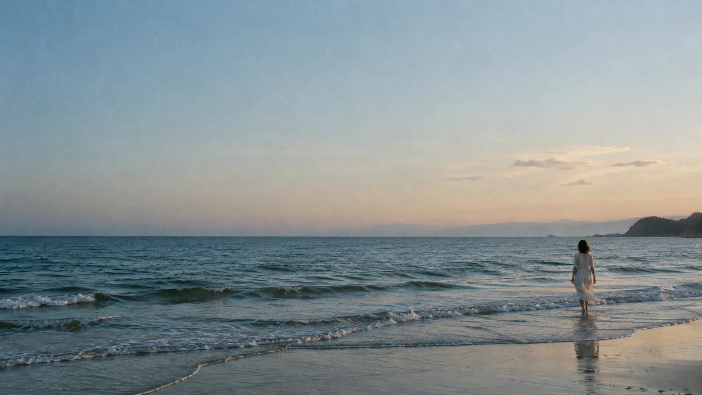
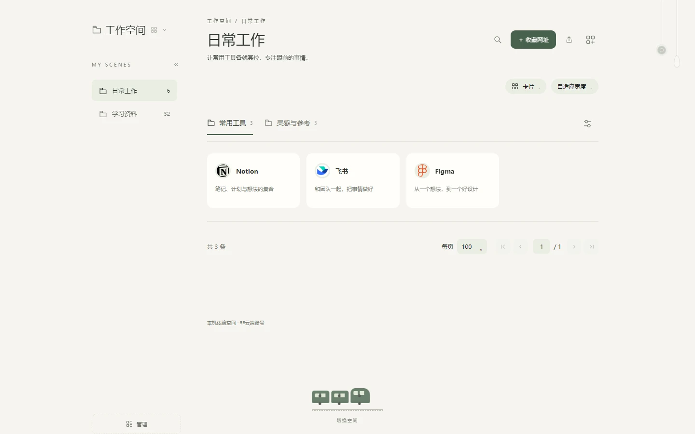
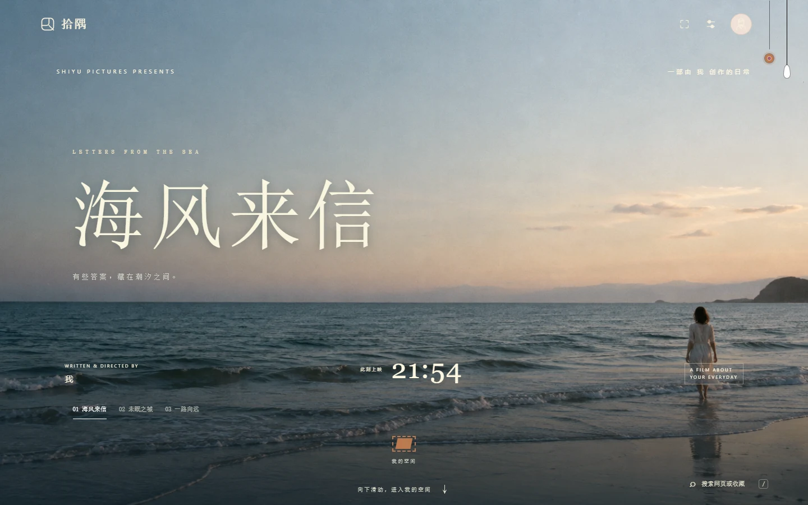

拾隅 · 人生影院LET LIFE UNFOLD
有些答案，藏在潮汐之间。01 — 06
YOUR WORLD, AT YOUR PACE
把世界，
收进自己的日常。
01 / 拾起喜欢COLLECT WHAT MATTERS
让喜欢，
各有归处。
一篇想重读的文章，一个顺手的工具，
一处偶然发现的风景。
收在一起，按自己的习惯整理。
01
收下，一点心动
网页、工具与灵感，随手收藏。
02
理好，各种日常
工作、生活与兴趣，各有自己的空间。
03
留住，自己的秩序
用场景和分组，让需要的近在手边。
慢慢读留给周末的一点时间

✳
灵感，自由生长设计 / 影像 / 阅读
✓+把纷繁，整理成自己的章节。SPACE / SCENE / COLLECTION
02 / 循迹而来FIND YOUR WAY BACK
想找的，有迹可循。
从这里，搜索新的答案。
也找回收藏里，那一点熟悉的心动。
试着搜索：设计、阅读、生活DEMO COLLECTION
少一点翻找，多一点从容。
03 / 向外看见STAY OPEN. STAY CURIOUS.
在自己的小世界，
遇见更大的世界。
顺着一个兴趣，走向不同的平台。
看见别人的创作，也为生活添一点新鲜。
每一种热爱，都有一扇打开的窗。EXPLORE YOUR CURIOSITY
04 / 随心而居MAKE YOURSELF AT HOME
每次打开，
都合此刻心意。
一页留白，一片山海，一张唱片。
用喜欢的首页，开始今天的工作与生活。
被认真对待。

01 / 06今天这部电影，由你主演。
拾隅的不同模样，都是你的日常。LESS NOISE. MORE LIFE.
给日常，
留一点从容。
当信息越来越多，愿你仍有选择的余地。
收下喜欢的，理好在意的，把时间留给生活。
你的世界，自有归处。